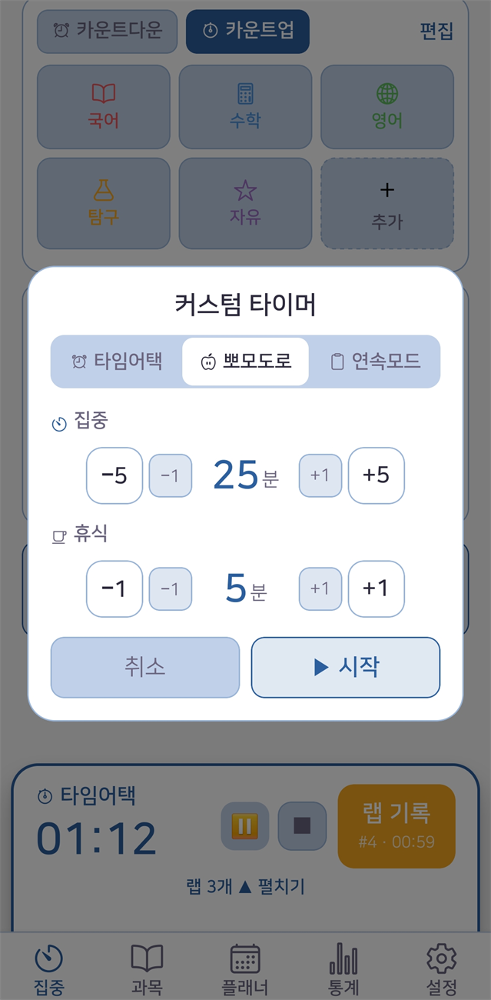
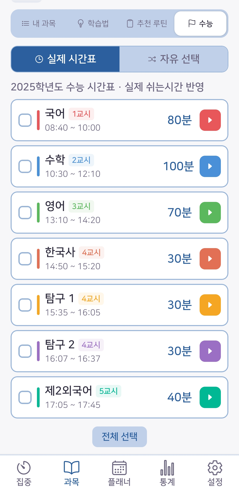
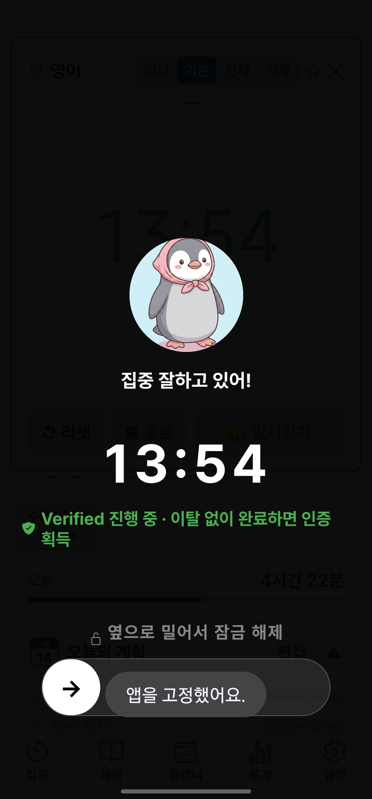
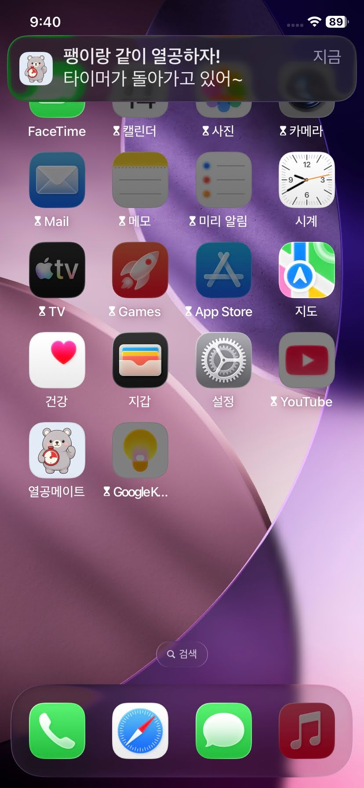
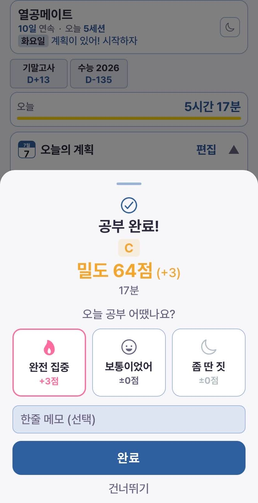
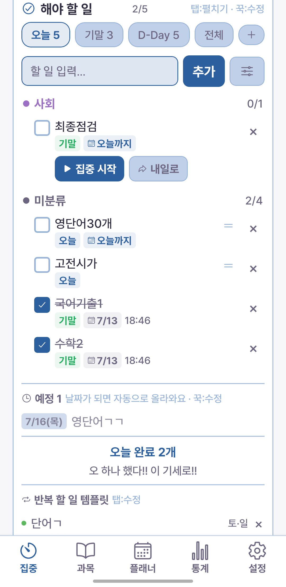
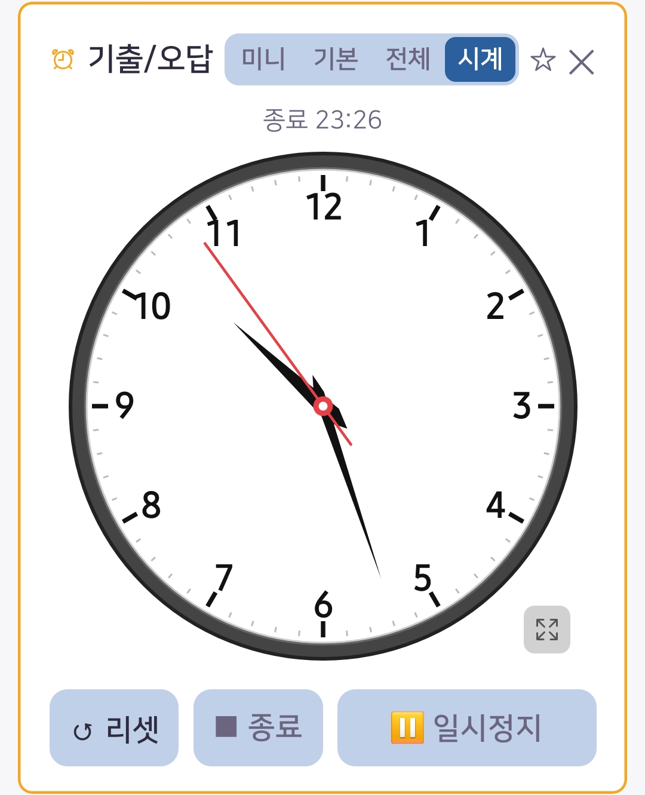

집중 탭
5가지 타이머와 딴짓 차단 잠금, 그리고 집중밀도 점수. 시간을 재는 데서 끝나지 않고 진짜 집중을 만들어냅니다.

공부 스타일에 맞게 고르세요. 백그라운드나 잠금화면에서도 벽시계 기준으로 정확하게 측정돼, 앱을 꺼도 시간이 어긋나지 않습니다.

여러 과목·항목을 등록하면 사이 휴식까지 자동으로 이어서 실행합니다. 실제 시험 시간표를 그대로 넣어 실전 감각을 연습하거나, 학년별로 검증된 학습법 프리셋을 탭 한 번으로 시작할 수 있어요.

폰을 잡는 습관을 단계적으로 끊어줍니다. 잠금 강도는 일반 / 집중 / 울트라집중 3단계로 조절돼요(울트라집중은 일시정지도 차단, 이탈 횟수가 기록됩니다). 강도별 차이와 상황별 추천은 활용법에서 볼 수 있어요.

집중을 시작하면 미리 골라둔 방해 앱(유튜브·게임 등)이 홈 화면에서 잠겨 실행되지 않습니다. 울트라집중 전체 차단을 켜면 허용한 앱을 빼고 전부 잠겨요. Android는 OS 화면 고정으로 앱 전환 자체를 막습니다.

타이머를 멈추면 이번 공부의 집중밀도 점수가 나옵니다. 일시정지·이탈·완료율·집중 모드·자가평가를 종합해 계산하고, 등급으로 보여줘요. 낙제 등급이 없어 계속하고 싶게 설계했습니다.
※ 정해진 공식으로 계산됩니다 (AI 아님).

집중 탭에서 오늘의 할 일을 바로 관리합니다. 과목·기한·반복을 붙여 오늘·시험·D-Day 목록으로 정리하고, 할 일의 '집중 시작'을 누르면 그 할 일로 타이머가 바로 시작돼요. 공부를 마치면 완료 체크와 공부 시간 누적까지 자동으로 이어집니다.

타이머를 시험장 벽시계처럼 아날로그로 볼 수 있어요. 종료 시각이 함께 표시되고 가로 전체화면을 지원해, 실제 시험처럼 남은 시간을 감각으로 익히는 연습에 좋습니다.
그 밖에
토루(곰)·팽이 등 캐릭터가 상황에 맞는 응원 메시지를 건넵니다.
빗소리·백색소음 등 집중을 돕는 사운드를 골라 함께 재생할 수 있어요.
광고 없이, 오늘 공부부터 집중으로 확인해 보세요.